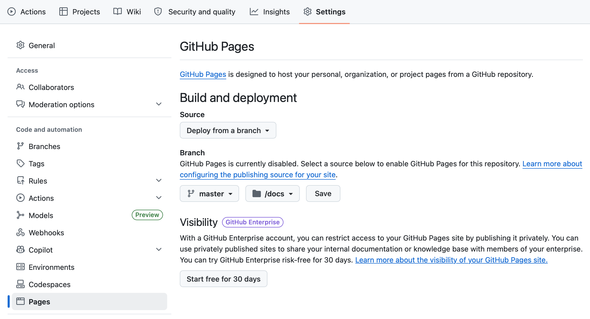

Publishing a Quarto Project with GitHub Pages
Introduction
GitHub Pages is a free static hosting service provided by GitHub. It allows you to publish websites directly from a repository, which makes it especially useful for Quarto reports, project websites, and student portfolios.
In a typical workflow, you first prepare and push your project to GitHub, and then configure GitHub Pages from the repository settings so the site becomes publicly accessible.
According to the source material, common uses of GitHub Pages include:
- Quarto reports and websites
- Student portfolios
Prerequisites
Before enabling GitHub Pages, make sure you have:
- a GitHub repository already created
- your project pushed to GitHub
- a Quarto project or other static content ready to publish
- a clear output folder strategy, such as publishing from
docs/
If your project is built with Quarto, it is common to configure the rendered site so the final output is written to a publishable folder such as docs/.
Step 1. Open your repository on GitHub
Go to the GitHub repository that contains the project you want to publish. The GitHub Pages configuration starts from the repository interface.
Step 2. Open the repository settings
Inside the repository:
- Click Settings
- In the left sidebar, scroll down
- Click Pages
These are the configuration steps indicated in the source material.

Step 3. Choose the publishing source
Under Source, configure the repository publishing options.
The source material indicates the following setup:
- Branch:
main - or
masterif that is your default branch - Folder:
/ (docs)
Then click Save.
Make sure the selected branch matches the branch you are actually using in the repository. In many projects this is main, but some repositories may still use master.
Step 4. Wait for GitHub to publish the site
After saving the Pages configuration, GitHub will generate a public link after a short delay. The source indicates that this usually takes a few minutes.
A typical published URL looks like this:
https://<your-username>.github.io/<repository-name>/How this fits with Quarto
A common workflow for Quarto projects is:
- Write and render your
.qmdfiles - Make sure the generated site is placed in the folder you plan to publish
- Push the repository to GitHub
- Enable GitHub Pages from the repository settings
- Share the generated public URL
If you are building a small course website or technical documentation site, keeping the rendered output in docs/ can simplify publishing with GitHub Pages.
Common mistakes
Mistake 1. Selecting the wrong branch
If GitHub Pages is configured to publish from main but your content is on another branch, the site will not publish correctly.
Mistake 2. Selecting the wrong folder
If Pages is configured to use / (docs), but the rendered site is not inside docs/, GitHub will not find the expected files.
Mistake 3. Expecting the site to appear instantly
GitHub Pages may take a few minutes to generate and expose the public link. fileciteturn1file0L17-L20
Mistake 4. Forgetting to push changes
Local changes do not affect GitHub Pages until they are committed and pushed to the repository.
Recommended workflow
To keep the process simple and reproducible:
- Keep your project under Git version control
- Push the latest version to GitHub
- Configure GitHub Pages from Settings > Pages
- Publish from the correct branch and folder
- Test the public URL after deployment
Final note
GitHub Pages is a simple and effective way to publish static academic and technical content for free. For Quarto users, it is especially useful for sharing reports, course materials, and small websites directly from a GitHub repository.